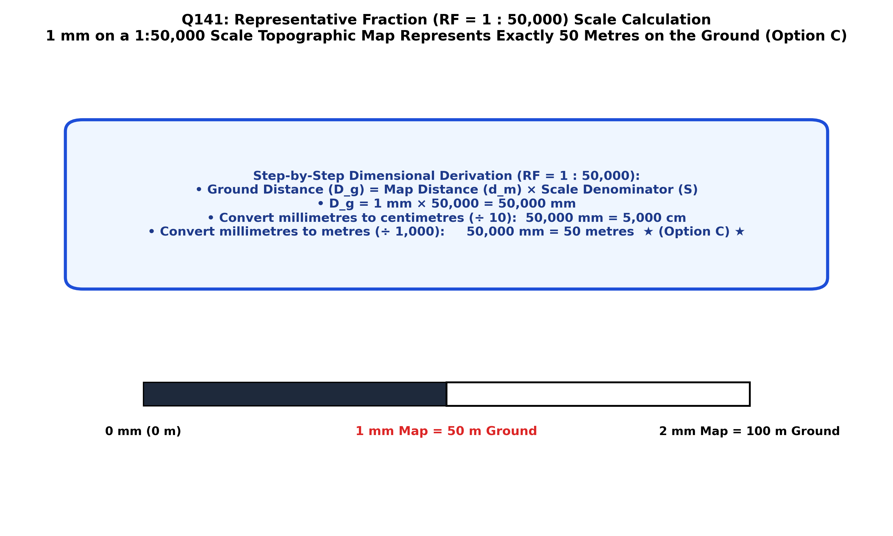

In surveying, geological mapping, and cartography, the map scale expresses the mathematical ratio of a distance measured on the map sheet to the corresponding true horizontal distance on the ground surface:
When expressed as a unitless ratio or fraction, it is formally termed the Representative Fraction (RF):
where $1$ unit of distance measured in any unit on the map represents exactly $M$ of those same identical units on the ground.
We are asked: What does $1\text{ mm}$ on a map drawn at a scale of $1:50,000$ represent on the ground?
1. By definition of RF, $1\text{ unit on map} = 50,000\text{ identical units on the ground}$:
2. Converting ground millimeters to centimeters ($1\text{ cm} = 10\text{ mm}$):
3. Converting ground centimeters to meters ($1\text{ m} = 100\text{ cm}$):
4. Converting to kilometers ($1\text{ km} = 1,000\text{ m}$):
| Map Measurement (1:50,000 Scale) | Ground Millimeters | Ground Centimeters | Ground Metres | Ground Kilometers |
|---|---|---|---|---|
| $1\text{ mm}$ on map | $50,000\text{ mm}$ | $5,000\text{ cm}$ | $50\text{ metres}$ (Option C) | $0.05\text{ km}$ |
| $2\text{ mm}$ on map | $100,000\text{ mm}$ | $10,000\text{ cm}$ | $100\text{ metres}$ | $0.10\text{ km}$ |
| $1\text{ cm}$ ($10\text{ mm}$) on map | $500,000\text{ mm}$ | $50,000\text{ cm}$ | $500\text{ metres}$ | $0.50\text{ km}$ |
| $2\text{ cm}$ ($20\text{ mm}$) on map | $1,000,000\text{ mm}$ | $100,000\text{ cm}$ | $1,000\text{ metres}$ | $1.0\text{ kilometer}$ |

The 1:50,000 topographic scale is the foundational standard for Geological Survey of India (GSI) quadrangle mapping, Survey of India (SOI) open series maps (OSM), and regional structural field exploration across India.
By exact mathematical unit conversion:
$1\text{ mm on map} = 50,000\text{ mm on ground}$.
Dividing by $1,000\text{ mm/m}$ gives:
$$\text{Ground Distance} = \frac{50,000}{1,000} = \mathbf{50\text{ metres}}$$.
Hence, Option C is strictly correct.
$50\text{ cm} = 500\text{ mm}$. If $1\text{ mm} = 50\text{ cm}$, the scale would be $1:500$, which is a micro-architectural site plan, not a 1:50,000 regional topomap.
$5\text{ m} = 5,000\text{ mm}$. If $1\text{ mm} = 5\text{ m}$, the scale would be $1:5,000$ (off by a factor of 10).
$500\text{ cm} = 5\text{ metres}$ ($5,000\text{ mm}$). This is identical to Option B and also represents an RF of $1:5,000$, which is a factor of 10 too small.
| Standard Map Scale (RF) | $1\text{ mm}$ on Map Represents | $1\text{ cm}$ on Map Represents | $1\text{ inch}$ on Map Represents | Survey / Geological Role |
|---|---|---|---|---|
| 1:1,000 | $1\text{ meter}$ | $10\text{ meters}$ | $83.3\text{ feet}$ | Detailed mine bench & plant layout |
| 1:5,000 | $5\text{ meters}$ | $50\text{ meters}$ | $416.7\text{ feet}$ | Mine lease boundary & cadastral maps |
| 1:10,000 | $10\text{ meters}$ | $100\text{ meters}$ | $833.3\text{ feet}$ | Detailed mineral deposit block mapping |
| 1:25,000 | $25\text{ meters}$ | $250\text{ meters}$ | $\approx 0.39\text{ miles}$ | SOI Open Series high-detail topomap |
| 1:50,000 (Exam Standard) | $50\text{ metres}$ | $500\text{ metres}$ | $\approx 0.79\text{ miles}$ | National Topomap & GSI Base Quadrangle |
| 1:100,000 | $100\text{ meters}$ | $1\text{ kilometer}$ | $\approx 1.58\text{ miles}$ | Regional district planning maps |
| 1:250,000 | $250\text{ meters}$ | $2.5\text{ kilometers}$ | $\approx 3.95\text{ miles}$ (1 inch = 4 miles) | Old degree sheet (1° × 1° quadrangle) |
| 1:1,000,000 | $1,000\text{ m}$ ($1\text{ km}$) | $10\text{ kilometers}$ | $\approx 15.8\text{ miles}$ | State geological map / Million Sheet |